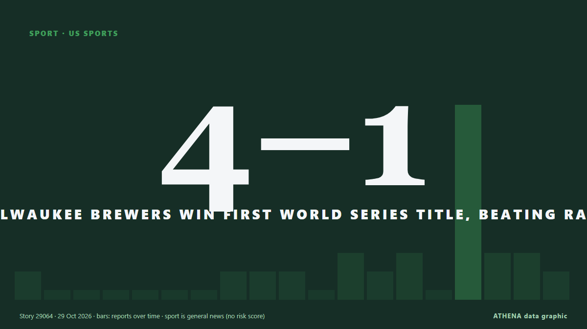

Milwaukee Brewers Win First World Series Title, Beating Rays 4-1

The Milwaukee Brewers captured their first World Series championship in franchise history on Wednesday, Oct. de Colombia One
Informado de forma independiente por 14 medios de 13 países desde el 25 oct; el primero fue Mainichi (English); la cobertura ya se ha calmado. Deportes y cultura se archivan sin evaluación de riesgo. La confianza es del 90 % (alta): lo corroboran 14 medios independientes, con una fiabilidad media de las fuentes del 72 %. Medios por país: Canadá (5), Estados Unidos (3), Taiwán (2). Cobertura: del 25 oct al 29 oct, 104 horas.
Qué ha cambiado: 12 informaciones nuevas de 11 redacciones en las 24 horas hasta el 29 oct.
Los titulares se muestran en inglés, tal como se publicaron.
De un vistazo
Seleccionado, puntuado y redactado por la metodología publicada de ATHENA. Ningún editor interviene en eventos concretos. Cómo se elabora ›
| 25 Oct 09:00 UTC | 1 |
|---|---|
| 25 Oct 15:00 UTC | 0 |
| 25 Oct 21:00 UTC | 0 |
| 26 Oct 03:00 UTC | 0 |
| 26 Oct 09:00 UTC | 0 |
| 26 Oct 15:00 UTC | 0 |
| 26 Oct 21:00 UTC | 0 |
| 27 Oct 03:00 UTC | 1 |
| 27 Oct 09:00 UTC | 1 |
| 27 Oct 15:00 UTC | 1 |
| 27 Oct 21:00 UTC | 0 |
| 28 Oct 03:00 UTC | 2 |
| 28 Oct 09:00 UTC | 1 |
| 28 Oct 15:00 UTC | 2 |
| 28 Oct 21:00 UTC | 0 |
| 29 Oct 03:00 UTC | 9 |
| 29 Oct 09:00 UTC | 1 |
| 29 Oct 15:00 UTC | 2 |
Por qué estas cifras
Importancia
Riesgo
Confianza
La cobertura: quién informó y cuándo
titular tal como se publicó · abre el original- Mainichi (English) · JapónBaseball: Frelick, Pratt lift Brewers to 5-4 comeback win over Rays and 2-0 World Series lead
- NPR · Estados UnidosBrewers rout the Rays 10-1 to move within a win of their first World Series title
- CBC News (alternative feed) · CanadáRays put on the brink of World Series flop by Brewers' historic 8-run, 2-out inning
- Taipei Times · TaiwánRays stare at World Series flop
- CBC News (alternative feed) · CanadáTampa Bay Rays stun Milwaukee Brewers with late Game 4 win, keeping World Series hopes alive
- NPR · Estados UnidosRays stun Brewers with 2-run rally in 12th inning and force World Series Game 5
- BusinessWorld · FilipinasTampa Bay Rays rally for 2 in 12th inning with a 4-3 win over Brewers, extend World Series to Game 5
- Taipei Times · TaiwánRays stun Brewers to force Game 5
- Colombia One · ColombiaRays Stay Alive in World Series, But History Favors Brewers
- CBC News (alternative feed) · CanadáMilwaukee Brewers defeat Tampa Bay Rays to become 1st-time World Series champions
- The Independent · Reino UnidoCharming, cantankerous Pat Murphy at age 67 leads Brewers to first World Series title
- The Canadian Press (via CityNews) · CanadáBrewers beat the Rays 4-1 in Game 5 to win the first World Series title in franchise history
- CNA (Channel NewsAsia) · SingapurBaseball-Brewers beat Rays 4-1 for first World Series title
- Korea Herald · Corea del SurBrewers win first World Series of franchise
- NPR · Estados UnidosBrewers beat the Rays to win the first World Series title in franchise history
- ABC News Australia · AustraliaBrewers complete underdog story with maiden World Series title
- Business Recorder · PakistánMilwaukee brews its first World Series title with triumph over Rays
- Cyprus Mail · ChipreBrewers win first World Series in 57-year history
- NL Times · Países BajosFormer Dutch national baseball manager leads Milwaukee to World Series championship
- The Canadian Press (via CityNews) · CanadáMilwaukee is closing schools for the Brewers’ long-awaited World Series title parade Friday
- Colombia One · ColombiaMilwaukee Brewers Win First World Series Title, Beating Rays 4-1